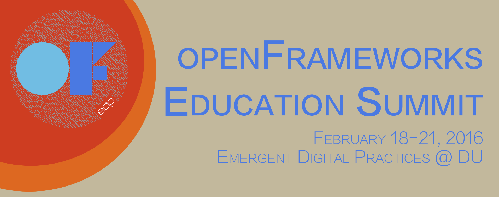

Documentation and information about the openFrameworks Education Summit hosted by Emergent Digital Practices at the University of Denver in February 2016
This project is maintained by EmergentDigitalPractices

The openFrameworks Education Summit brings together Artists & Educators from the University of Denver, Carnegie Mellon University, The School of the Art Institute of Chicago, The School for Poetic Computation, Parsons School of Design, Penn State, The School for the Visual Arts, Microsoft, Carnegie Museum of Art, and internationally from Vienna Austria, and Dresden Germany. Over the four days the participants will work together to produce and improve the educational materials for the open-source creative coding tool openFrameworks. This will improve the approachability of openFrameworks as well as help students around the world learn how to create with this powerful digital arts and design tool.
Support Provided By: The Arts, Humanities and Social Sciences Division @ DU, Emergent Digital Practices @ DU, The Marsico Visiting Scholars Fund, The Frank-Ratchye STUDIO for Creative Inquiry at Carnegie Mellon University, The School of the Art Institute of Chicago, Art and Technology Studies Department, The School for Poetic Computation
Greetings openFrameworks Community!
This week February 18 - 21st 2016, a diverse collection of openFrameworks educators will be gathering at the Emergent Digital Practices Program in Denver, Colorado. Our goal is to make openFrameworks easier to teach and easier to learn. Our objectives are to:
Generous community members, we invite your remote participation during the event! There will be opportunities for community members working at all technical levels. To facilitate remote participation we will document our meetings, coordinate todo lists, and progress here.
To kick off the event, we will Periscope the initial event meeting at 9am MST on February 18th. We will also maintain a presence on the openFrameworks IRC and Slack channels.
Thanks for being part of the community and we look forward to your participation!